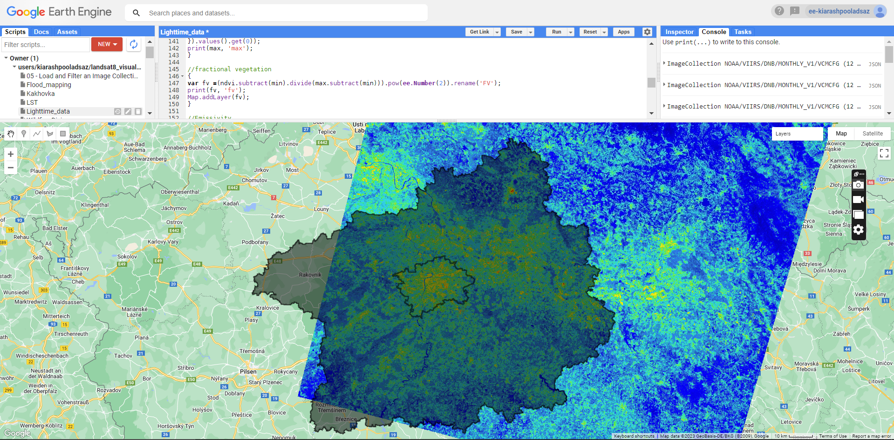

Integrating nighttime light data, population distribution, and land surface temperature: comprehensive approach to visualise Human Settlement Patterns in Prague and Central Bohemian regions.
Nighttime Light & Urban Heat Island
Understanding the dynamics of human settlements, urbanization, and environmental conditions is crucial for informed decision-making and sustainable development. Combining night light data from VIIRS, population distribution, and land surface temperature helps to provide a comprehensive approach to reach valuable insights regarding urbanization, the urban heat island effect, socioeconomic patterns, and environmental monitoring. This practice attempted to process the mentioned data and visualize their relationship, shedding light on the complex interplay between human activities and the surrounding environment.
Night light data is commonly collected using sensors onboard satellites, such as the Visible Infrared Imaging Radiometer Suite (VIIRS). These sensors detect and measure the radiance or brightness of light emitted from cities, towns, and other populated areas at night. The VIIRS sensor is particularly renowned for its ability to capture and quantify low-light emissions, making it an essential tool for studying urbanization and monitoring changes over time. The figure below shows the average radiance emission of night time light data in Prague and Central Bohemian regions between 2014 and 2022.
Night light data is closely correlated with population density. By calibrating night light measurements with population data, it is possible to combine the population distribution with night light data to assess the sparse or rapidly changing populations. Otherwise, the emitted light could be related to industrial sites and complex sport facilities such as stadium. Therefore, correlating such data with land-use maps is essential to categorise the emitted light regarding a specific land cover.

Urban Heat Island is a trending topic in the recent years. It refers to the phenomenon where urban areas experience higher temperatures compared to surrounding rural areas. Difference in temperature has to do with changes in radiative and thermal properties of impervious surfaces. Temperatures vary within cities due to the spatial distribution of water, soil, vegetation, and impervious surfaces. Albedo and infrastrucure, reduced vegetation in urban areas, urban density, weather conditions, and the geography of the area influence on the land surface temperature.

Land surface temperature was calculated using Landsat 8 imagery. It begins by selecting the thermal band (Band 10) from the Landsat 8 image and then converting The values of the thermal band to brightness temperature. Next, the fractional vegetation was calculated by analyzing the normalised difference vegetation index. It was used to determine the emissivity of the land surface. Finally, using the brightness temperature and emissivity values, the LST was computed. This approach provides insights into the thermal characteristics of the land surface, which are valuable for various applications such as studying urban heat islands, assessing environmental impacts, and informing urban planning and climate change studies.
